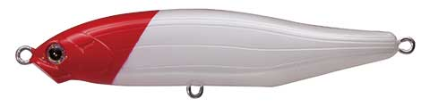
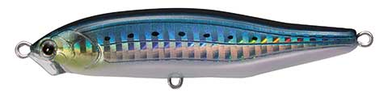
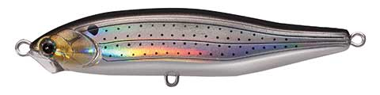
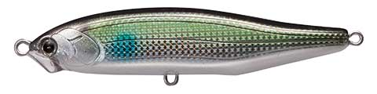

フィード シンキングスライダー85
（FEED.SINKINGSLIDER CFSS85）
フィード シンキングスライダー85はTACKLE HOUSE（タックルハウス）のシンキングペンシルです。
CONTACT（コンタクト）シリーズの「FEED.」の1つで、幅の広いスラロームで広範囲にアピールします。K-TENシステムと空気抵抗の少ないボディで飛距離も出せ、大河川・サーフ・磯場など大場所に潜む大型シーバスを主なターゲットにしたモデルです。

画像出典:タックルハウス公式HP
スペック
- メーカー
- TACKLE HOUSE（タックルハウス）
- 品番
- CFSS85
- タイプ
- シンキングペンシル
- 全長
- 85mm
- 自重
- 18g
- フック
- ST-46 #4
- リング
- #4
- 重心
- K-TENシステム（磁着タングステンウェイト）
- ターゲット
- シーバス
- 価格
- 2,200円
▼今すぐチェック

シンキングスライダー85の特徴
幅の広いスラロームと飛距離で、大場所の大型シーバスを狙うシンペン
-
幅の広いスラローム
幅の広いスラロームアクションで、広い範囲の魚にアピールします。
-
K-TENシステムで飛距離を確保
磁着タングステンウェイトのK-TENシステムと、空気抵抗の少ないボディで飛距離を出せます。
-
シャローを自由に組み立てられる
ロッドポジションやアクションへのレスポンスがよく、シャローレンジのゲームを自由に組み立てられます。
シンキングスライダー85の使い方
基本は遠投してのただ巻き。幅の広いスラロームで、広範囲の魚を呼び込みます。
ロッドポジションへの反応がいいので、ロッドを立てて浅く引いたり、寝かせて少しレンジを入れたりと、シャローのレンジを自分で調整しながら探りましょう。
シンキングスライダー85の得意な状況
大河川・サーフ・磯場など、大場所に潜む大型シーバスを狙う場面。シャローレンジを広く探りたいときに向いています。
ワンポイント
さらに遠投したいときや、縦方向にもアピールしたいときは、同じ85mmで+12gのヘビーウエイト版「CFSS85HW（30g）」があります。固定重心で、水平姿勢のままスピーディにフォールするので、遠投が必要なサーフや磯場で活躍します。
シンキングスライダーとフィードシリーズの使い分け
| モデル | 全長／自重 | 得意な場面 |
|---|---|---|
| シンキングスライダー85（CFSS85） | 85mm／18g | K-TENシステムで飛距離を出し、シャローを幅広スラロームで（本記事のモデル） |
| シンキングスライダー85HW（CFSS85HW） | 85mm／30g | 固定重心のヘビーウエイト版。遠投と水平フォールで縦にもアピール |
| フィードシャロー128F | 128mm／18.5g | 同じフィードのフローティングミノー。シャローランナーの定番 |
シャローをスラロームで広く探るならCFSS85、もっと遠投や縦の動きが欲しいならHW、浮かせて引きたいならフィードシャロー128Fと使い分けましょう。
人気カラー
全12色の中から4色を紹介します。

1 パールレッドヘッド定番のパールレッドヘッド。ナイトゲームや濁りでシルエットを出したいときに。

9 SHGイワシイワシを意識したホログラムカラー。デイゲームのサーチに。

11 HGコノシロコノシロを意識したホログラムカラー。コノシロパターンの時期に。

19 ボラボラを意識したナチュラルカラー。ボラがベイトの河川や河口に。
画像出典:タックルハウス公式HP
シンキングスライダー85に似ているルアー
-
 ムロッソ85S
OSP
詳細はこちら＞
ムロッソ85S
OSP
詳細はこちら＞
全長85mm・自重20.4gのシンキングペンシル。同じ85mmクラスの重めのシンペンとして。
-
 モアザン スイッチヒッター85S
DAIWA
詳細はこちら＞
モアザン スイッチヒッター85S
DAIWA
詳細はこちら＞
全長85mm・自重20gのシンキングペンシル。同じ85mmで、不規則スラロームとジグ並みの飛距離が欲しいときに。
-
 フィードシャロー128F
タックルハウス
詳細はこちら＞
フィードシャロー128F
タックルハウス
詳細はこちら＞
同じフィードシリーズのフローティングミノー。シャローを浮かせて引きたいときに。